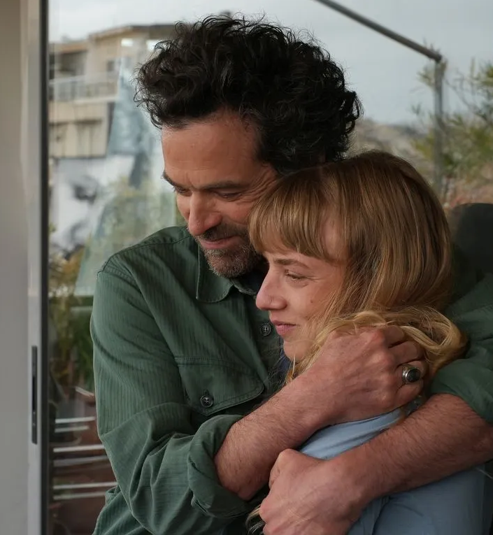

IMPRIME SUR PAPIER RECYCLE, NE JETEZ PAS CE JOURNAM SUR LA VOIE PUBLIQUE: DONNEZ-LE OU RECYCLEZ-LE. MERCI !
I.Harsin/Sipa
PARIS (8e)
Des jeunes inscrits
à Pôle emploi poussent
les portes du Crillon P.3
RÉFORME DES RETRAITES
La mobilisation
à la française, un art
qui séduit nos voisins P.4

L.Vu/TFI
TÉLÉVISION
Bas les masques
sur les costumes
de «Mask Singer» P.10

VOIR
ATHÈNES
ET MÛRIR
Vingt ans après «L'Auberge espagnol»,
Cédric Klapisch revient avec «Salade grecque»
et fait le lien entre deux génération. P.8
Jérôme Plon/Amazon Studios